Notice d'utilisation de l'application pour tapis de course Domyos T900D
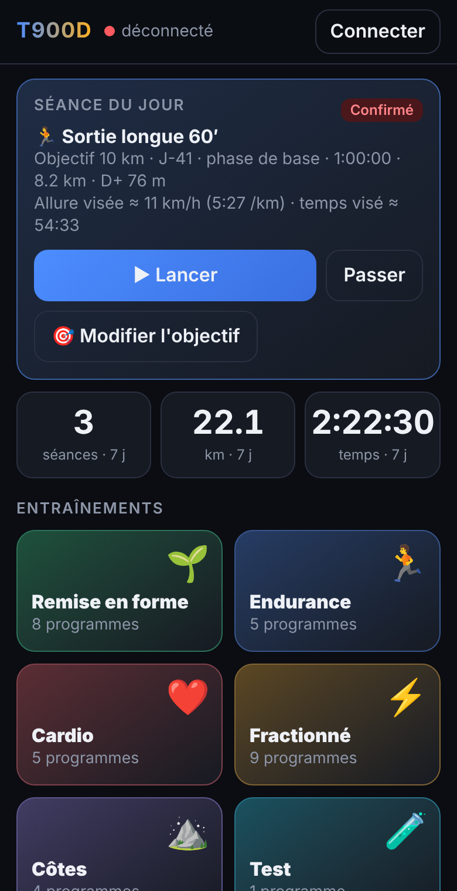
Version v4 · application Android (APK) · novembre 2026
Sommaire
Présentation
Sécurité
Installation et mises à jour
Connexion au tapis
L'écran d'accueil
Le plan guidé : la séance du jour
Choisir et lancer un programme
L'écran de course
Intensité, affichage géant et reprise
Fréquence cardiaque et zones
La VMA
Mes séances : favoris et créations
Créer une séance pas à pas
Course libre
Historique et statistiques
Progression
Analyse
Samsung Health et Santé Connect
Glycémie et insuline active (AAPS)
Réglages et sauvegarde
En cas de problème
1. Présentation
L'application pilote le tapis Domyos T900D en Bluetooth depuis un téléphone Android. Elle permet de :
lancer l'un des 32 programmes d'entraînement intégrés, classés par catégorie et par niveau ;
créer ses propres séances sur un graphe : la pente en barres bleues, la vitesse en ligne orange ;
laisser l'appli régler automatiquement la vitesse et la pente du tapis à chaque étape, avec bips et annonces vocales ;
suivre un plan guidé qui propose la séance du jour selon ton niveau, et peut préparer un objectif de course (5 km, 10 km, semi-marathon) ;
adapter l'intensité d'une séance à ta forme du jour et passer en affichage géant ;
afficher en direct la vitesse, la pente, la distance, le temps, les calories et la fréquence cardiaque avec sa zone (ceinture pectorale du tapis) ;
enregistrer chaque séance, la reprendre si l'appli a été fermée en route, et consulter l'historique, les courbes de progression et les records ;
analyser l'effet de l'entraînement sur ton cœur au fil des semaines ;
envoyer chaque séance vers Samsung Health, par Santé Connect ;
afficher la glycémie et l'insuline active pendant la course, si l'appli AAPS est installée sur le téléphone ;
sauvegarder automatiquement les données après chaque séance.
Chaque téléphone garde ses propres données : sa VMA, sa FC max, son plan, ses séances, ses favoris et son historique.
2. Sécurité
L'application ne remplace pas les sécurités du tapis.
Accroche toujours le clip de sécurité du tapis à tes vêtements.
En cas d'urgence, utilise le bouton Stop de la console ou tire le clip. N'attends pas l'appli.
Si la liaison Bluetooth est perdue, le tapis continue de tourner à sa dernière consigne : seule la console peut alors l'arrêter.
Les changements de vitesse sont automatiques. Écoute les bips et les annonces pour ne pas être surpris.
Le test VMA et le fractionné sont des efforts intenses. En cas de reprise après une longue pause ou de doute sur ta santé, demande un avis médical.
3. Installation et mises à jour
Installer
Sur le téléphone, ouvre le lien : https://github.com/caritte/T900D/releases/latest/download/t900d-v4.apk
Ouvre le fichier t900d-v4.apk téléchargé.
Android demande d'autoriser l'installation depuis cette source, puis affiche un avertissement « application inconnue » : accepte. C'est normal pour une appli hors Play Store.
Téléphones Samsung : si le message « Application inconnue bloquée » apparaît, ouvre Paramètres → Sécurité et confidentialité → Bloqueur automatique, désactive-le, installe l'appli, puis réactive-le si tu veux.
Au premier appui sur Connecter, accepte la permission « Appareils à proximité » (Bluetooth). Sur Android 11 ou plus ancien, c'est la permission de localisation qui est demandée.
Mettre à jour
Les mises à jour ne sont pas automatiques. Télécharge le nouveau fichier et installe-le par-dessus l'appli existante, sans la désinstaller : toutes les données sont conservées.
Les versions
Cette notice décrit la version v4, la seule qui reçoit des mises à jour. Les fichiers des versions précédentes (t900d-v1.apk, t900d-v2.apk, t900d-v3.apk) restent téléchargeables, mais Android refuse de les installer par-dessus une version plus récente : pour revenir à l'une d'elles, il faut exporter tes données, désinstaller l'appli, installer l'ancienne version, puis importer. La version installée est indiquée en bas de l'écran Réglages.
Ne désinstalle pas l'appli sans avoir exporté tes données (chapitre 20) : la désinstallation efface l'historique et les séances.
4. Connexion au tapis
Allume le tapis et active le Bluetooth du téléphone.
Touche Connecter en haut à droite, puis choisis le tapis dans la liste (son nom commence par Domyos).
Le point devient vert et le nom du tapis s'affiche. Le bouton devient Déconnecter.
L'appli se connecte aussi d'elle-même quand tu ouvres un programme.
Perte de liaison
Si le Bluetooth se coupe, l'appli affiche « reconnexion… » et réessaie sans arrêt. Pendant ce temps la séance continue, puisque le tapis tourne toujours. Au retour de la liaison :
si le tapis tourne encore, l'appli renvoie la vitesse et la pente de l'étape en cours ;
si le tapis est à l'arrêt, la séance passe en pause.
Déconnecter
Déconnecter coupe la liaison sans relancer la reconnexion automatique. Pendant une séance, l'appli demande confirmation, car le tapis ne sera plus piloté.
Le tapis n'accepte qu'un seul téléphone à la fois. Pour qu'une autre personne se connecte, déconnecte d'abord le premier téléphone.
5. L'écran d'accueil
L'accueil regroupe tout par tuiles.
En haut
T900D (à gauche) : touche ce logo depuis n'importe quel écran pour revenir à l'accueil.
L'état de la connexion et le bouton Connecter / Déconnecter.
La carte Séance interrompue, seulement si une séance n'a pas été terminée (chapitre 9).
La carte Séance du jour du plan guidé (chapitre 6).
Le bilan des 7 derniers jours : nombre de séances, kilomètres, temps.
Entraînements
Tuile
Contenu
Remise en forme
Progression marche / course en 7 étapes, marche inclinée
Endurance
Footings à allure facile, de 30 à 75 minutes
Cardio
Allure soutenue : tempo, seuil, fartlek
Fractionné
Efforts courts et intenses : 30/30, 1'/1', pyramide, 400 m, 1000 m
Côtes
Travail en pente, jusqu'à 10 %
Test
Test VMA par paliers
Mes séances
Tes favoris et tes créations
Course libre
Pilotage manuel, sans programme
Suivi
Historique : séances passées et statistiques.
Progression : courbes et records.
Analyse : cœur, récupération, zones.
Réglages : VMA, FC max, plan, sons, Santé Connect, sauvegarde.
Navigation
La flèche ‹ et le bouton Retour d'Android remontent d'un écran. L'appli fonctionne en portrait comme en paysage.
L'accueil
6. Le plan guidé : la séance du jour
Le plan choisit pour toi la prochaine séance. Elle s'affiche en haut de l'accueil, dans la carte Séance du jour.
Démarrer un plan
Au premier lancement, la carte te demande ton niveau. Touche Débutant, Intermédiaire ou Confirmé.
Niveau
Contenu du plan
Débutant
Le cycle de reprise : « Reprise 1 » à « Reprise 7 », chaque étape à réussir deux fois (14 séances). Ensuite, une semaine type : footings, fractionné court, cardio, côtes douces.
Intermédiaire
Une rotation de 12 séances qui alterne footing, fractionné, seuil et côtes.
Confirmé
Une rotation de 8 séances : sorties longues, VMA, seuil long, côtes.
Utiliser la carte
▶ Lancer ouvre la séance proposée.
Passer saute cette séance et propose la suivante.
La ligne grise indique où tu en es, par exemple « Cycle de reprise · séance 3/14 ».
Quand le plan avance
Le plan passe à la séance suivante quand tu termines la séance proposée en entier (au moins 80 % de sa durée). Une séance arrêtée en route, ou une autre séance que celle proposée, ne le fait pas avancer. Tu restes libre de lancer n'importe quel autre programme.
Les conseils de récupération
Un message orange ⚠ apparaît sur la carte dans deux cas :
tu t'es entraîné il y a moins de 16 heures : une journée de repos est conseillée ;
la séance proposée est intense (cardio, fractionné, côtes) et la précédente séance intense date de moins de deux jours.
Ce sont des conseils : le bouton Lancer reste utilisable.
Préparer une course : l'objectif
Sur la carte « Séance du jour », le bouton 🎯 Objectif de course ouvre directement ce réglage ; il devient 🎯 Modifier l'objectif une fois l'objectif défini. Dans Réglages, choisis « Objectif de course » (5 km, 10 km ou Semi-marathon) et la date de la course, au moins 9 jours à l'avance. Le plan s'organise alors jusqu'à cette date :
Phase
Séances proposées, à tour de rôle
Base (premiers 40 % du temps)
Footing, fractionné court, sortie longue.
Spécifique
Selon la distance : fractionné ou seuil, footing ou sortie longue, et une séance « Allure course » faite de répétitions en distance à l'allure visée.
Affûtage (7 derniers jours)
Footing court et rappel de vitesse léger.
Veille et jour J
Repos : aucune séance n'est proposée.
La carte de l'accueil affiche le compte à rebours (« J-41 »), la phase en cours, et l'allure et le temps visés, estimés d'après ta VMA : 93 % de la VMA sur 5 km, 88 % sur 10 km, 80 % sur semi-marathon. Ce sont des estimations, pas une garantie.
Après la date de la course, le plan reprend son déroulement normal. Pour annuler un objectif, remets « Objectif de course » sur Aucun.
Changer de niveau ou recommencer
Dans Réglages, la ligne « Plan guidé » change le niveau ou désactive le plan (« Aucun »). Recommencer le plan au début remet le compteur à la première séance.
Seuls les programmes intégrés comptent pour le plan. Une copie personnalisée ou une séance créée à la main ne le fait pas avancer.
7. Choisir et lancer un programme
Sur l'accueil, touche une catégorie.
Filtre si besoin par niveau : Tous, Débutant, Intermédiaire, Confirmé.
Chaque carte montre le profil de la séance, sa durée, sa distance et son dénivelé estimés, et une courte description.
Touche ▶ Lancer : l'écran de course s'ouvre et l'appli se connecte au tapis.
Démarre la séance, au choix :
avec le bouton Start du tapis ;
avec le bouton Démarrer de l'appli.
Les autres boutons d'une carte
Personnaliser : ouvre une copie du programme dans l'éditeur. Une fois enregistrée, elle apparaît dans « Mes séances ».
☆ : ajoute le programme aux favoris. L'étoile devient ★ ; touche-la de nouveau pour le retirer.
Progression conseillée
Débutant : 3 séances par semaine, un jour de repos entre chaque. Enchaîne « Reprise 1 » à « Reprise 7 » dans l'ordre ; passe à la suivante quand la séance en cours passe facilement deux fois de suite.
Intermédiaire : par semaine, 1 footing d'endurance, 1 séance de cardio ou de fractionné, 1 séance de côtes ou un second footing.
Confirmé : même structure avec les séances de niveau confirmé. Jamais deux séances intenses deux jours de suite.
Les vitesses des programmes dépendent de ta VMA (chapitre 11). Règle-la avant ta première séance.
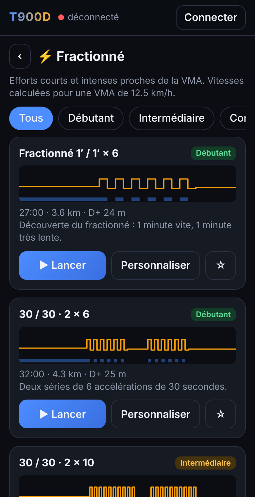
La catégorie Fractionné
8. L'écran de course
Ce qui est affiché
Le graphe de la séance, avec un trait blanc qui avance et l'étape en cours en surbrillance.
Le temps restant de l'étape, en très gros, avec sa vitesse et sa pente, et l'étape suivante. Pour une étape définie en distance, c'est la distance restante en mètres qui s'affiche.
Six compteurs : vitesse, pente, fréquence cardiaque avec sa zone (« bpm · Z3 »), distance, temps, calories.
Les boutons
Bouton
Effet
Démarrer / Reprendre
Lance ou reprend la séance et le tapis
Pause
Met la séance et le tapis en pause
Suivante
Passe tout de suite à l'étape suivante
Arrêter
Arrête le tapis et enregistre la séance
Vitesse − / +
Ajuste en direct par pas de 0,5 km/h
Pente − / +
Ajuste en direct par pas de 1 %
− 100 % + (en haut)
Intensité de toute la séance (chapitre 9)
⛶ (en haut à droite)
Affichage géant ou détaillé (chapitre 9)
Un ajustement en direct vaut jusqu'à la fin de l'étape : l'étape suivante applique ses propres valeurs. L'écran reste allumé pendant la séance. Une séance de moins de 10 secondes n'est pas enregistrée.
Depuis la console du tapis
Start démarre ou reprend la séance.
Stop la met en pause. Touche ensuite Arrêter dans l'appli pour la terminer et l'enregistrer.
Bips et voix
Un bip à 3, 2 et 1 seconde de chaque changement d'étape, puis un bip plus aigu au changement.
La voix annonce chaque étape (vitesse, pente, durée) et prévient 10 secondes avant la suivante.
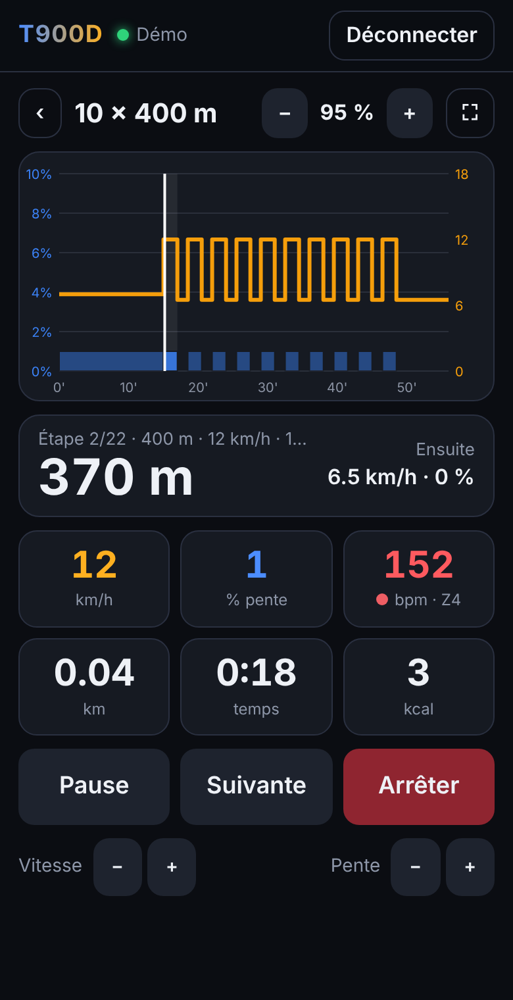
Une séance en cours
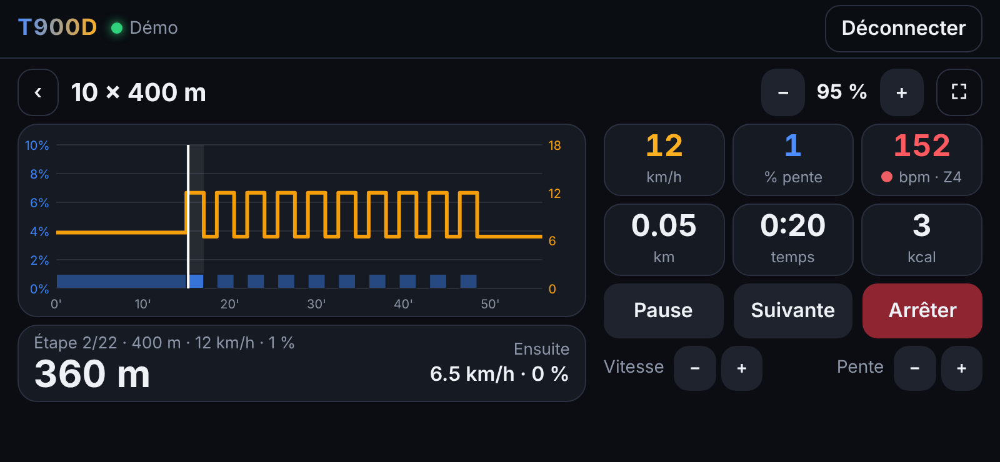
En paysage : graphe à gauche, compteurs et boutons à droite
9. Intensité, affichage géant et reprise
Régler l'intensité du jour
En haut de l'écran de course, à côté du titre, les boutons − et + encadrent un pourcentage. Ils décalent toutes les vitesses de la séance par pas de 5 %, de 80 % (plus facile) à 120 % (plus dur).
Le réglage se fait avant le départ ou en pleine séance : la vitesse de l'étape en cours change aussitôt.
Les pentes et les durées ne changent pas. Une étape en distance garde sa distance.
Le réglage vaut pour cette séance seulement : la suivante repart à 100 %.
L'affichage géant
Le bouton ⛶, en haut à droite, bascule entre deux affichages, à tout moment :
détaillé : le graphe, les six compteurs et tous les boutons ;
géant : le temps (ou la distance) restant en très gros, l'étape suivante, la vitesse, la pente et la fréquence cardiaque. Il se lit de loin, surtout en paysage.
Le bouton est bleu quand l'affichage géant est actif. L'appli retient ton choix pour les séances suivantes. En course libre, l'affichage géant montre aussi le temps écoulé.
Reprendre une séance interrompue
Pendant une séance, l'appli mémorise son avancement toutes les 5 secondes. Si elle est fermée en route (appel, batterie, fermeture par erreur), l'accueil affiche pendant 12 heures la carte Séance interrompue :
Reprendre rouvre la séance en pause, là où elle s'est arrêtée, avec le temps et la distance déjà faits. Relance ensuite avec Start du tapis ou Reprendre.
Enregistrer telle quelle range dans l'historique ce qui a été fait.
Abandonner efface cette séance, après confirmation.
Si l'appli se ferme, le tapis continue de tourner à sa dernière consigne. Arrête-le à la console avant de rouvrir l'appli.
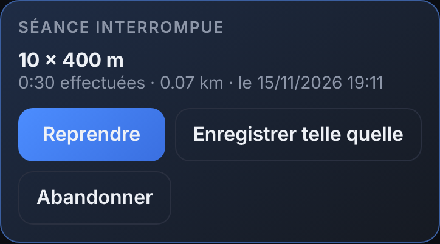
La carte « Séance interrompue » sur l'accueil
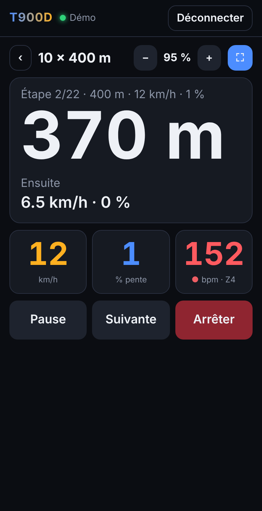
L'affichage géant
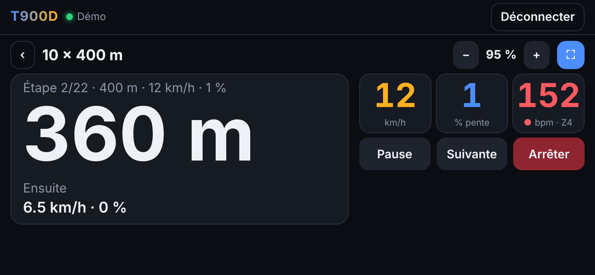
L'affichage géant en paysage
10. Fréquence cardiaque et zones
Porte la ceinture pectorale du tapis, électrodes humidifiées. Le tapis capte le signal et le transmet à l'appli.
Régler sa FC max
Accueil → Réglages → « FC max », boutons −5−++5. Elle vaut 185 bpm par défaut. Si tu ne la connais pas, le repère habituel est 220 − ton âge.
Les cinq zones
Zone
% de la FC max
Sensation
Z1 Récupération
moins de 60 %
Très facile
Z2 Endurance
60 à 70 %
Facile, tu peux parler
Z3 Tempo
70 à 80 %
Soutenu, phrases courtes
Z4 Seuil
80 à 90 %
Difficile, quelques mots
Z5 Maximum
90 % et plus
Très dur, tenable peu de temps
Les bornes en battements par minute, calculées pour ta FC max, sont affichées dans Réglages.
Où les zones apparaissent
En course : sous le compteur de fréquence cardiaque, par exemple « bpm · Z3 ».
Dans le détail d'une séance : le temps passé dans chaque zone, en durée et en pourcentage. Ce calcul utilise ta FC max actuelle, y compris pour les anciennes séances.
L'alerte vocale
Dans Réglages, « Alerte vocale FC » propose : Aucune, Au-dessus de Z2, de Z3 ou de Z4. Si ta fréquence reste au-dessus de la limite pendant 15 secondes, la voix annonce ta fréquence et te demande de ralentir, au plus une fois par minute.
L'alerte s'applique à toutes les séances. « Au-dessus de Z2 » est utile pour rester en endurance ; pense à la désactiver avant un fractionné.
Les annonces vocales doivent être activées pour que l'alerte fonctionne.
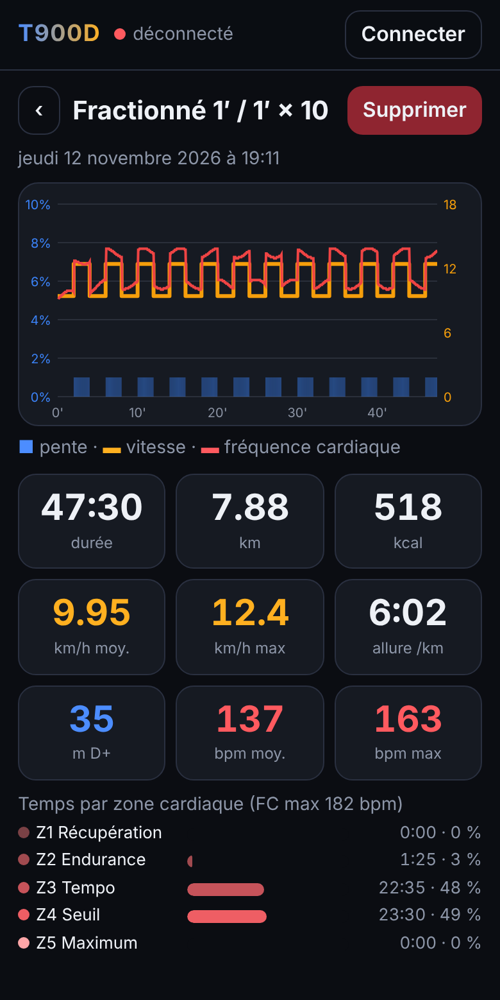
Le temps par zone, dans le détail d'une séance
11. La VMA
La VMA est la vitesse maximale que tu peux tenir environ 6 minutes. Les vitesses des programmes intégrés sont des pourcentages de cette valeur, arrondis au 0,5 km/h.
La régler
Accueil → Réglages → « Ma VMA », boutons − et +. Elle vaut 11 km/h par défaut.
Repères en attendant de la mesurer : débutant 9 à 11 km/h, intermédiaire 12 à 14, confirmé 15 et plus. Mieux vaut la régler un peu bas et la monter si les séances passent facilement.
Ce que change la VMA
Phase
% de la VMA
VMA 11
VMA 12
Échauffement
60 %
6,5 km/h
7 km/h
Footing
65 %
7 km/h
8 km/h
Seuil
85 %
9,5 km/h
10 km/h
Fractionné 30/30
100 %
11 km/h
12 km/h
Ne changent pas : les durées, les pentes, la marche (5 à 5,5 km/h), le test VMA, et les séances de « Mes créations », dont les vitesses sont fixes. Les vitesses sont plafonnées à 18 km/h.
Mesurer sa VMA : le test par paliers
Fais-le reposé, clip de sécurité accroché.
Accueil → Test → « Test VMA par paliers » → ▶ Lancer, puis Start.
Le test commence par 10 minutes d'échauffement à 7 km/h et 2 minutes de marche.
Les paliers démarrent à 8 km/h, pente 1 %, et la vitesse augmente de 0,5 km/h chaque minute.
Arrête dès que tu ne peux plus suivre (Stop du tapis ou Arrêter), puis marche quelques minutes.
Ta VMA est la vitesse du dernier palier terminé en entier. Exemple : si tu lâches pendant le palier à 13 km/h, ta VMA est 12,5 km/h.
Reporte cette valeur dans Réglages.
Refais le test toutes les 6 à 8 semaines pour suivre ta progression.
12. Mes séances : favoris et créations
La tuile ⭐ Mes séances réunit deux listes.
Favoris
Les programmes intégrés que tu as marqués d'une étoile. Ils gardent leurs vitesses calculées sur ta VMA. Touche ★ pour en retirer un.
Mes créations
Les séances que tu as créées ou personnalisées. Pour chacune :
▶ Lancer ouvre l'écran de course ;
Modifier ouvre l'éditeur ;
🗑 la supprime, après confirmation.
Le bouton + Nouvelle crée une séance vide (chapitre 13).
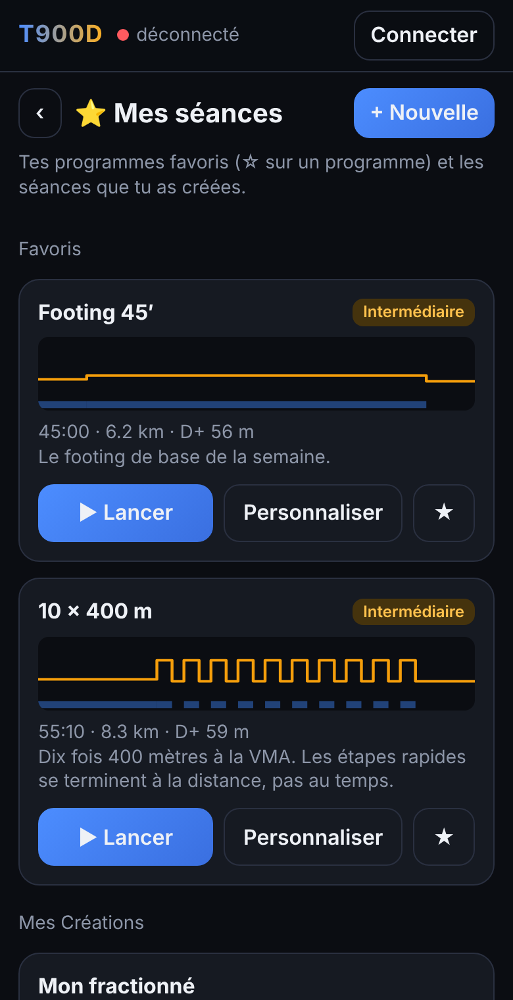
Mes séances
13. Créer une séance pas à pas
Accueil → ⭐ Mes séances → + Nouvelle.
Tape le nom de la séance en haut.
La séance démarre avec une étape : 5 minutes à 6 km/h, pente 0 %. Règle-la :
Durée : −1m, −15s, +15s, +1m ;
Vitesse : − et +, par pas de 0,5 km/h ;
Pente : − et +, par pas de 1 %.
Tu peux aussi tirer les poignées sur le graphe : le rond orange pour la vitesse, le carré bleu pour la pente.
Touche + Étape : une étape identique est ajoutée juste après. Règle-la à son tour.
Pour modifier une étape, touche sa zone sur le graphe : elle devient l'étape sélectionnée.
← et → déplacent l'étape sélectionnée. Supprimer l'enlève.
Vérifie le résumé sous le graphe : durée totale, distance et dénivelé estimés.
Touche Enregistrer.
Une étape en distance
Le bouton Durée ⇄ transforme l'étape sélectionnée en étape en distance ; il affiche alors « Distance ⇄ ». Les quatre boutons deviennent −500m, −100m, +100m, +500m (minimum 50 m). La durée entre parenthèses est une estimation.
Pendant la séance, une étape en distance se termine quand la distance est réellement parcourue, d'après la vitesse du tapis : elle dure donc un peu plus longtemps que l'estimation, le temps que le tapis accélère.
Répéter un bloc (fractionné)
Crée le bloc une fois, par exemple 30 s vite puis 30 s lentes.
Sélectionne la dernière étape du bloc.
Touche Répéter…, indique le nombre d'étapes du bloc (ici 2), puis combien de fois en plus (2 pour 3 répétitions au total).
Pour partir d'une base, utilise Personnaliser sur un programme : l'éditeur s'ouvre avec ses étapes déjà remplies.
Limites : vitesse de 1 à 18 km/h, pente de 0 à 10 %, durée minimale d'une étape 10 secondes.
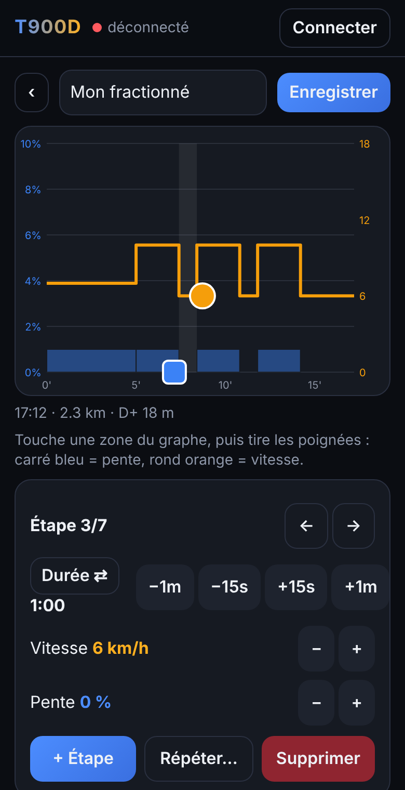
L'éditeur de séance
14. Course libre
La tuile Course libre ouvre l'écran de course sans programme. Démarre avec Start ou Démarrer, puis règle la vitesse et la pente avec les boutons − et + de l'appli ou avec la console. Le graphe trace la séance au fur et à mesure, et elle est enregistrée dans l'historique comme les autres.
15. Historique et statistiques
La liste
Trois filtres en haut : la période (7 jours, 30 jours, 1 an, tout), la séance, et le tri (date, distance, durée, vitesse).
Les totaux de la sélection : nombre de séances, kilomètres, temps, dénivelé, calories, vitesse moyenne.
Les séances, regroupées par mois quand le tri est par date. La mention « arrêtée » signale un programme interrompu avant la fin.
Le détail
Touche une séance pour voir son graphe (pente en bleu, vitesse en orange, fréquence cardiaque en rouge) et ses chiffres : durée, distance, calories, vitesse moyenne et maximale, allure au kilomètre, dénivelé, fréquence cardiaque moyenne et maximale. Supprimer l'efface de l'historique.
Sous les chiffres, le temps par zone cardiaque (chapitre 10) s'affiche si la ceinture était portée.
La distance est calculée par l'appli à partir de la vitesse. Elle est plus précise que le compteur du tapis, qui n'avance que par pas de 100 m ; les deux peuvent donc différer légèrement.
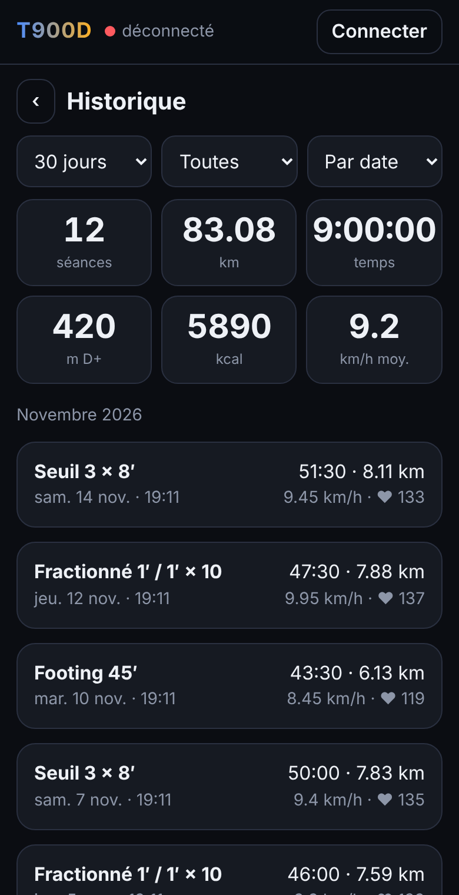
L'historique
16. Progression
La tuile Progression montre ton évolution sur plusieurs semaines. Touche une barre ou un point pour lire sa valeur en haut du graphe.
Volume par semaine
Les 12 dernières semaines, du lundi au dimanche. Trois boutons changent la mesure : Kilomètres, Temps, Séances. La barre la plus à droite est la semaine en cours.
Indice cardio
C'est ta vitesse moyenne pour 100 battements de cœur, calculée sur les phases courues (5 km/h et plus) où la ceinture était portée. Chaque point est une séance.
Quand l'indice monte, tu cours plus vite pour la même fréquence cardiaque : ton cardio progresse.
Il ne tient pas compte de la pente, et un fractionné donne un indice différent d'un footing. Compare donc des séances du même type.
Une séance n'apparaît que si elle contient au moins une minute de course avec fréquence cardiaque.
VMA
La courbe de ta VMA. Un point s'ajoute chaque jour où tu modifies la VMA dans Réglages, par exemple après un test.
Records
Plus longue séance, plus longue distance, meilleure vitesse moyenne (séances de 10 minutes et plus), vitesse maximale, plus gros dénivelé et meilleure semaine, chacun avec sa date.
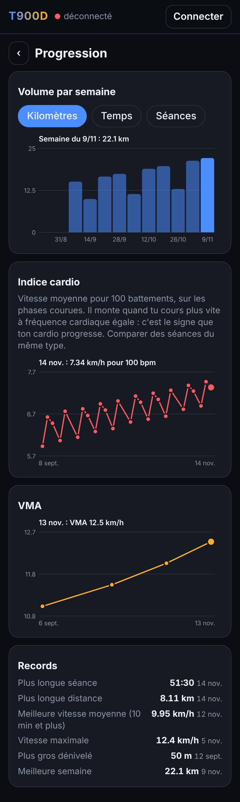
L'écran Progression
17. Analyse
La tuile Analyse mesure l'effet de l'entraînement sur ton cœur. Elle n'utilise que les séances faites avec la ceinture cardiaque, et il faut plusieurs semaines de séances pour qu'une tendance soit fiable. Touche un point ou une barre pour lire le détail.
Fréquence cardiaque selon la vitesse
Ta fréquence moyenne à chaque vitesse, par périodes de 4 semaines : les 4 dernières, les 4 précédentes, et il y a 8 à 12 semaines. Plus la courbe est claire, plus la période est récente.
Si la courbe la plus récente passe sous les autres, ton cœur travaille moins pour le même effort : tu progresses.
Le tableau compare les deux périodes les plus récentes. Un écart négatif est un progrès.
Ne comptent que les phases à plat (pente de 0 ou 1 %) où la vitesse est stable depuis 90 secondes. Une vitesse n'apparaît qu'avec au moins 2 minutes de mesures.
Récupération cardiaque
De combien de battements ta fréquence baisse dans la minute qui suit un effort intense. Chaque point est une séance de fractionné, avec la moyenne de ses récupérations. Plus la valeur est haute, mieux tu récupères.
Une séance compte si elle contient au moins 3 efforts de 45 secondes ou plus, chacun suivi d'une minute de récupération. Les footings ne sont pas pris en compte.
Zones cardiaques par semaine
Le temps passé dans chaque zone sur les 8 dernières semaines, en barres empilées. En dessous, la part de facile (Z1-Z2), de modéré (Z3) et de dur (Z4-Z5). Le repère courant en endurance est d'environ 80 % de facile.
Quelques battements d'écart d'une période à l'autre peuvent venir de la fatigue, de la chaleur ou de l'heure. C'est la tendance sur plusieurs périodes qui compte. Les zones dépendent de ta FC max (chapitre 10).
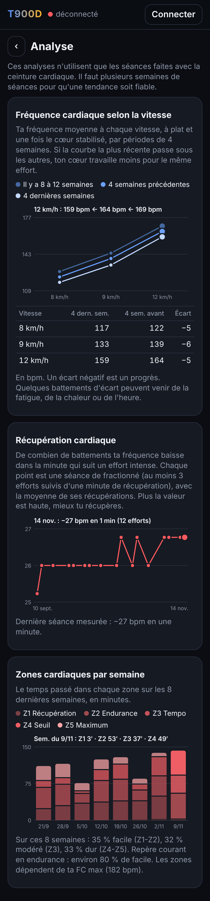
L'écran Analyse
18. Samsung Health et Santé Connect
L'appli peut envoyer chaque séance à Santé Connect (Health Connect), le carrefour de données santé d'Android. Samsung Health la récupère ensuite. Cette fonction demande Android 14 ou plus récent : sur une version plus ancienne, le réglage n'apparaît pas.
Activer
Dans Réglages, coche « Enregistrer les séances dans Health Connect ».
Android affiche une fenêtre de permission : autorise Exercice, Distance, Fréquence cardiaque et Total des calories brûlées. L'appli ne fait qu'écrire : elle ne lit aucune de tes données de santé.
Dans Samsung Health → Paramètres → Santé Connect, vérifie que la lecture de l'exercice est autorisée.
Ce qui est envoyé
À la fin de chaque séance, automatiquement : une « course sur tapis » avec son début, sa fin, sa distance, ses calories et sa courbe de fréquence cardiaque. Samsung Health l'affiche comme un exercice Tapis de course, parfois après quelques minutes ; tire son écran d'accueil vers le bas pour forcer la synchronisation.
La pente et les étapes du programme ne sont pas transmises. Samsung Health calcule ses propres zones cardiaques, qui diffèrent de celles de T900D.
Les deux boutons
Envoyer la dernière séance : pour tester, ou après un envoi échoué.
Envoyer tout l'historique : envoie toutes les séances déjà enregistrées. À faire une fois, après avoir activé la fonction.
Renvoyer une séance ne crée pas de doublon : elle est remplacée. La ligne sous la case indique le dernier envoi réussi, ou l'erreur rencontrée.
Il n'y a rien à installer : sur Android 14 et plus, Santé Connect fait partie du système. Tu le trouves en cherchant « Santé Connect » dans les paramètres du téléphone.
19. Glycémie et insuline active (AAPS)
Si l'appli AAPS est installée sur le même téléphone, l'écran de course peut afficher deux compteurs de plus : la glycémie et l'insuline active (IOB). Sans AAPS, rien ne change : ces compteurs n'existent pas.
Activer dans AAPS
Dans AAPS : Générateur de configuration → Synchronisation → coche « Samsung Tizen ». Malgré son nom, c'est ce module qui diffuse les données aux autres applis du téléphone. Rien ne passe par Internet, et T900D n'envoie jamais rien à AAPS.
Ce qui s'affiche
Glycémie : la valeur, la flèche de tendance, la variation et l'unité choisie dans AAPS. Une pastille est verte dans la cible, rouge avec la mention BAS, ou orange avec HAUT, selon tes seuils AAPS.
IOB : l'insuline active, en unités.
Les deux compteurs apparaissent aussi en affichage géant. Dans Réglages, une ligne indique l'heure de la dernière donnée reçue.
C'est un affichage d'information, pas une alarme.
AAPS ne diffuse qu'à chaque cycle, environ toutes les 5 minutes : la valeur affichée peut avoir quelques minutes.
Une glycémie de plus de 11 minutes s'affiche grisée, avec son âge (« il y a 14 min »). Ne t'y fie pas.
T900D ne sonne pas en cas d'hypoglycémie. Les alertes restent celles d'AAPS.
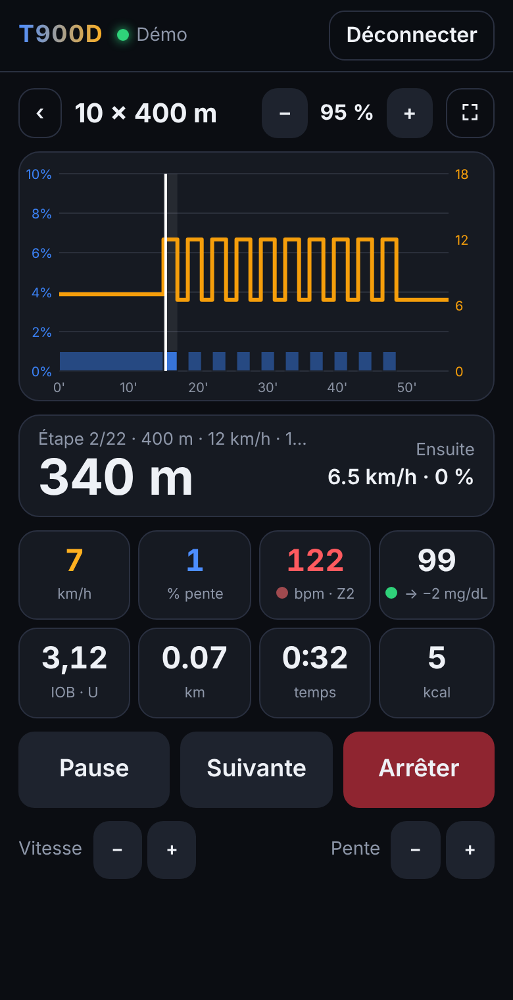
La glycémie et l'IOB sur l'écran de course
20. Réglages et sauvegarde
Ma VMA : voir chapitre 11.
FC max, zones et Alerte vocale FC : voir chapitre 10.
Plan guidé, Objectif de course et Date de la course : voir chapitre 6.
Bips et Annonces vocales : deux cases à cocher indépendantes.
Enregistrer les séances dans Health Connect et ses deux boutons d'envoi : voir chapitre 18.
Glycémie et IOB : la ligne n'apparaît que si le téléphone a déjà reçu des données d'AAPS (chapitre 19).
Sauvegarde automatique après chaque séance : quand la case est cochée, l'appli écrit le fichier de sauvegarde dans le dossier Documents/T900D du téléphone à la fin de chaque séance. Ce dossier est conservé si l'appli est désinstallée. La ligne en dessous indique la date de la dernière sauvegarde, ou l'erreur rencontrée.
Exporter mes données : crée le fichier t900d-sauvegarde.json (séances créées, favoris, VMA et son historique, FC max, plan et objectif, historique des séances) et ouvre le partage Android pour l'envoyer par mail, Drive ou messagerie.
Importer : choisis un fichier de sauvegarde. Les séances de l'historique déjà présentes ne sont pas dupliquées ; les séances créées sont ajoutées à la suite. La VMA, la FC max et le plan sont remplacés par ceux du fichier.
Journal Bluetooth : messages techniques, utiles en cas de problème de connexion.
Version : le numéro de la version installée, tout en bas.
Les données ne sont stockées que sur le téléphone. La sauvegarde automatique protège d'une désinstallation, pas de la perte du téléphone : envoie-toi un export de temps en temps, et toujours avant de changer de téléphone.
Pour restaurer après une réinstallation : Importer, puis choisis le fichier dans Documents/T900D. Après une réinstallation, les nouvelles sauvegardes automatiques peuvent porter la date dans leur nom.
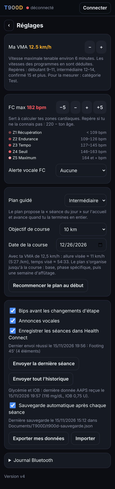
Les réglages
21. En cas de problème
Problème
Que faire
« Application inconnue bloquée » à l'installation (Samsung)
Désactive le Bloqueur automatique le temps de l'installation : Paramètres → Sécurité et confidentialité → Bloqueur automatique.
Le tapis n'apparaît pas dans la liste
Vérifie que le tapis est allumé, que le Bluetooth du téléphone est activé et que la permission « Appareils à proximité » est accordée. Vérifie qu'aucun autre téléphone n'est déjà connecté au tapis.
La connexion échoue
Éteins et rallume le Bluetooth du téléphone, puis réessaie. Relève le contenu de Réglages → Journal Bluetooth.
La fréquence cardiaque reste à « - »
Humidifie les électrodes de la ceinture, resserre-la, et vérifie que la console du tapis affiche bien le pouls.
Les zones semblent trop hautes ou trop basses
Vérifie ta FC max dans Réglages : toutes les zones en dépendent.
Le plan n'avance pas
Il n'avance que si la séance proposée est terminée en entier, lancée depuis un programme intégré. Utilise Passer pour avancer à la main.
L'indice cardio est vide
Il faut au moins deux séances avec la ceinture pectorale et une minute de course chacune.
La case Health Connect n'apparaît pas dans Réglages
Le téléphone est sous Android 13 ou plus ancien : la fonction demande Android 14.
La séance n'arrive pas dans Samsung Health
Vérifie la ligne « Dernier envoi réussi » dans Réglages, puis que Samsung Health a le droit de lire l'exercice dans Santé Connect, et tire son accueil vers le bas pour synchroniser.
La glycémie ne s'affiche pas
Vérifie que le module « Samsung Tizen » est coché dans AAPS, puis attends un cycle de boucle (jusqu'à 5 minutes).
L'écran Analyse est presque vide
Il faut des séances avec la ceinture cardiaque, à vitesse stable et à plat, et plusieurs semaines pour comparer les périodes.
La sauvegarde automatique indique une erreur
Autorise l'accès au stockage si Android le demande. Sinon, utilise Exporter mes données et signale le message d'erreur affiché dans Réglages.
La carte « Séance interrompue » n'apparaît pas
Elle n'est proposée que pendant 12 heures, et seulement si la séance n'a été ni terminée ni arrêtée avec le bouton Arrêter.
Une étape en distance dure plus longtemps que prévu
C'est normal : elle se termine à la distance réellement parcourue, accélération du tapis comprise.
Pas de bips ou pas de voix
Vérifie les cases dans Réglages et le volume « multimédia » du téléphone. La voix utilise la synthèse vocale d'Android : vérifie qu'une voix française est installée.
La séance ne démarre pas avec Start du tapis
L'écran de course doit être ouvert et le tapis connecté (point vert) avant d'appuyer sur Start. Sinon, utilise Démarrer.
Le tapis ne change plus de vitesse
La liaison est peut-être perdue : regarde l'état en haut de l'écran. Pilote le tapis à la console en attendant la reconnexion.
La mise à jour refuse de s'installer
Ne désinstalle pas avant d'avoir exporté tes données. Exporte, désinstalle, réinstalle, puis importe.